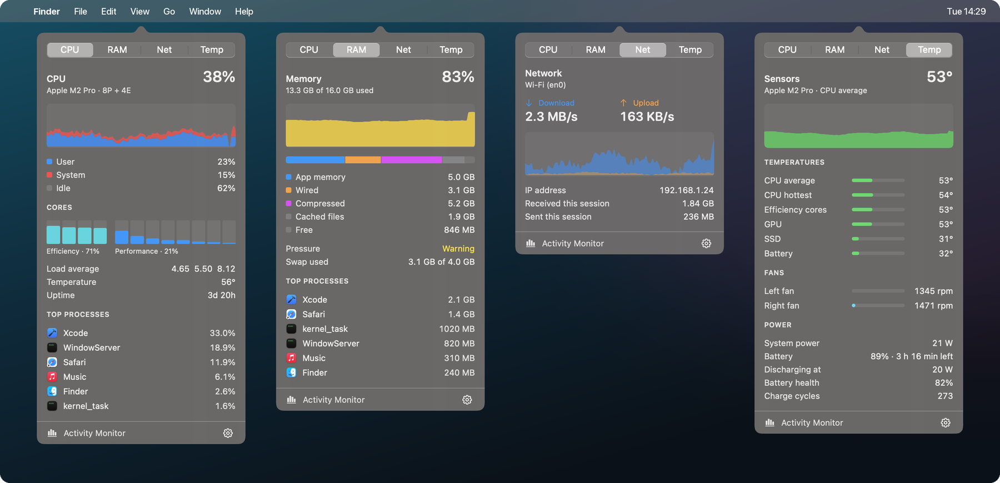

Gauge is a free, open-source system monitor for the menu bar. CPU, GPU, memory, disk, network and sensors each get their own item with a detailed popover, all for about 1% CPU.
Each module is its own menu bar item. ⌘-drag to reorder them. The gear in any popover sets the interval, styles, colors and °C/°F.
History graph or per-core bars split into efficiency and performance cores, load average, temperature, uptime, top processes.
Utilization history, peak, temperature and core count.
A level bar colored by memory pressure, a breakdown matching Activity Monitor, swap, top processes.
Read/write throughput, volumes with free space, totals since boot.
Upload and download rates, rate history, interface, IP address and session totals.
CPU, GPU, SSD and battery temperatures, fans, system power, battery health and cycles.
Actual popovers, captured with Gauge's demo mode so the process list, IP address and drive names are sample values.

Sampling reads Mach, IOKit and SMC counters directly. Items only redraw when their value changes, and popovers exist only while open.
of one core with the default four modules at a 2 s interval
to take every sample in one tick
dependencies, special permissions and network requests
Build from source in about a minute. Requires macOS 15+ and Xcode 16+.
git clone https://github.com/Felix-Bergmann-Code/gauge.git cd gauge ./scripts/build.sh --install --run
The sensor tables have only been verified on an M2 Pro. If you have another Apple silicon Mac, run Gauge --dump and send the output in an issue or PR. That one contribution helps everyone with the same chip.